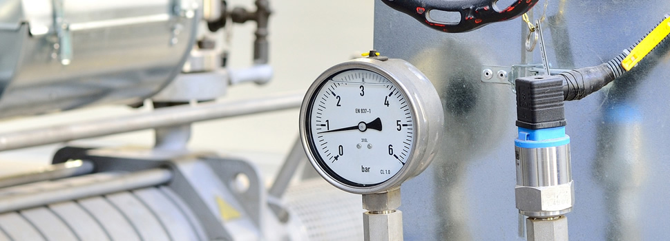

MISSÃOApoio técnico qualificado
Fornecer serviços e apoio a usuários de equipamentos de pressão, temperatura e outras grandezas, aplicando boas práticas profissionais e tecnologia.
Sobre a Instrumentech
Desde 2008, instrumentação, calibração, manutenção e inspeção conectadas por um compromisso técnico comum.
01Trajetória confirmada
A Instrumentech atua desde 2008 com serviços para equipamentos de pressão, temperatura e outras grandezas físicas, além de frentes industriais, analíticas e biomédicas.
Cada demanda começa pelo equipamento: fabricante, modelo, faixa, condição e aplicação. É esse conjunto que define método, recursos e prazo antes de qualquer proposta.

02Evolução
Da entrada no mercado de instrumentação à estrutura de atendimento técnico integrado.
Entrada no mercado de instrumentação.
Calibração, assistência técnica, laboratório analítico, serviços biomédicos e NR-13 formam o portfólio atual.
Demandas industriais e laboratoriais organizadas por equipamento, aplicação e necessidade.
03Princípios institucionais
MISSÃOFornecer serviços e apoio a usuários de equipamentos de pressão, temperatura e outras grandezas, aplicando boas práticas profissionais e tecnologia.
VISÃOAtuar no setor industrial e analítico com instrumentos, equipamentos e padrões modernos.
VALORESAmor, humildade, companheirismo, transparência, comprometimento e ética.
Converse com a equipe
Envie os dados do equipamento e da aplicação.